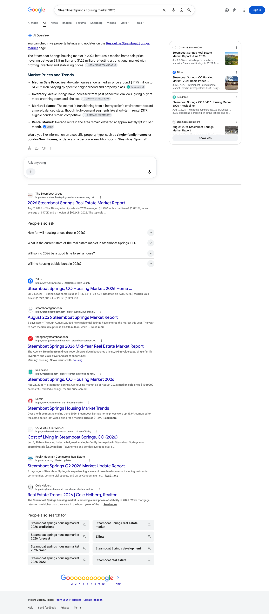
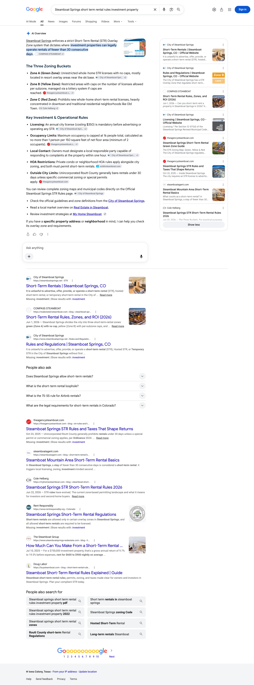
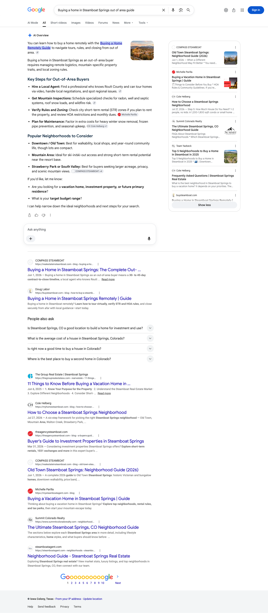

August 2026 | The Cheryl Foote Team
Executive summary
In August, realestateinsteamboat.com was named as a source on all twelve of the buyer and investor questions we track. Across the three engines covered here, Google’s AI Overview, Perplexity and ChatGPT, there is no question in the set that came back without one of your pages in the answer.
Perplexity named you on every one of the twelve. Google’s AI Overview named you on eleven of the eleven questions where it produced an Overview, which is every Overview it produced. ChatGPT named you on seven of the twelve, including the question that asks for the team by name and the short-term rental question your investor buyers ask.
Sixteen separate pages were carried as the source across those twelve questions, and every one of them sits on realestateinsteamboat.com rather than on a portal or a directory listing. When an engine answers a Steamboat question and reaches for you, it reaches for your own writing.
Two notes on the tiles below. The Google tile counts Overview citations across all twelve tracked questions, and Google produced an Overview on eleven of them, so the working figure is eleven of eleven. The clicks tile counts Google Search clicks to the whole site across the window shown, not only the twelve questions tracked here.
Citation matrix
✓ Cited: your site is among the sources that answer drew on
– Not cited in the reading for that column
◦ Google did not generate an AI Overview for this question, so there was no AI answer to be cited in
| Buyer question | Google AI Overview | Perplexity | ChatGPT | |
|---|---|---|---|---|
| Best neighborhoods in Steamboat Springs Coloradorealestateinsteamboat.com | ✓ | ✓ | ✓ | |
| Buying a home in Steamboat Springs out of area guiderealestateinsteamboat.com | ✓ | ✓ | – | |
| Cheryl Foote Steamboat Springs real estaterealestateinsteamboat.com | ◦ | ✓ | ✓ | |
| Cost of living in Steamboat Springs COrealestateinsteamboat.com | ✓ | ✓ | ✓ | |
| Is Steamboat Springs a good place to liverealestateinsteamboat.com | ✓ | ✓ | – | |
| Moving to Steamboat Springs Colorado guiderealestateinsteamboat.com | ✓ | ✓ | – | |
| Old Town Steamboat Springs neighborhood guiderealestateinsteamboat.com | ✓ | ✓ | ✓ | |
| Steamboat Springs housing market 2026realestateinsteamboat.com | ✓ | ✓ | – | |
| Steamboat Springs neighborhoods where to liverealestateinsteamboat.com | ✓ | ✓ | ✓ | |
| Steamboat Springs real estate market report June 2026realestateinsteamboat.com | ✓ | ✓ | ✓ | |
| Steamboat Springs short term rental rules investment propertyrealestateinsteamboat.com | ✓ | ✓ | ✓ | |
| What is it like to live in Steamboat Springs Coloradorealestateinsteamboat.com | ✓ | ✓ | – |
Reading the matrix. Every question is cited on at least one engine: twelve of twelve. Perplexity carries all twelve, Google’s AI Overview carries eleven of the eleven questions where it produced an Overview, and ChatGPT carries seven. On one row, the question that asks for the team by name, Google produced no AI Overview at all, so that cell carries a circle rather than a dash: there was no AI answer for a source to sit in. Perplexity and ChatGPT both named you on that question.
One label to know before you read the columns. Google displays realestateinsteamboat.com under the site name COMPASS STEAMBOAT, so that is the name your site appears under inside an AI Overview and in the source panel beneath it. Two things are worth knowing about how to read the columns. Perplexity and ChatGPT were read on multiple days between August 7 and August 25. Google’s AI Overview column is different: it is a single reading of each question taken on August 29, read from the page itself rather than across the month, so treat it as a snapshot. A dash there means your site was not among the sources Google showed on that one reading, which is not the same as being absent for the month. Second, all three engines rebuild their answers on every run and Google localizes its answers by where the search is run from, so a check mark means your site was among the sources on at least one reading in that window, not that it appears on every run. The reverse matters just as much: a question without a mark is one we have not seen you carried on yet, not a settled absence, because a different reading on a different day can return a different set of sources. Source lists were read as first rendered, so any list of sources named here is what the engine showed first, not a complete inventory.
Story one
Perplexity names realestateinsteamboat.com on every one of the twelve questions in the set, from the question that asks for the team by name through the neighborhood questions, cost of living, moving to Steamboat, the market report and the short-term rental rules an investor asks about. Across the readings taken this month there is no question here where Perplexity answered a Steamboat buyer without your site among the sources it drew on.
Story two
Google produced an AI Overview on eleven of the twelve questions and named your site on eleven of those eleven. On these readings there was no question in the set where Google wrote an AI answer and built it without one of your pages. The wins cover both halves of your buyer. On the commercial side: the market report, the housing market question, and the short-term rental rules. On the relocation and neighborhood side: buying from out of area, moving to Steamboat, cost of living, whether Steamboat is a good place to live, what it is like to live here, and where to live once you arrive.
| Buyer question | Status | Your page carried as the source |
|---|---|---|
| Best neighborhoods in Steamboat Springs Colorado | Cited | Neighborhoods guide |
| Buying a home in Steamboat Springs out of area guide | Cited | Old Town neighborhood guide |
| Cost of living in Steamboat Springs CO | Cited | Cost of living guide |
| Is Steamboat Springs a good place to live | Cited | Living in Steamboat Springs guide |
| Moving to Steamboat Springs Colorado guide | Cited | Living in Steamboat Springs guide |
| Old Town Steamboat Springs neighborhood guide | Cited | Old Town neighborhood guide |
| Steamboat Springs housing market 2026 | Cited | June market report |
| Steamboat Springs neighborhoods where to live | Cited | Neighborhoods guide |
| Steamboat Springs real estate market report June 2026 | Cited | June market report |
| Steamboat Springs short term rental rules investment property | Cited | Short-term rental rules guide |
| What is it like to live in Steamboat Springs Colorado | Cited | Living in Steamboat Springs guide |



Story three
ChatGPT names your site on seven of the twelve questions, and the group it names you on is a commercially valuable one: the question that asks for the team by name, the short-term rental rules an investor asks about, the market report, cost of living, and every neighborhood question in the set.
| Buyer question | Status | Your page carried as the source |
|---|---|---|
| Best neighborhoods in Steamboat Springs Colorado | Cited | old town steamboat springs neighborhood guide 2026 |
| Cheryl Foote Steamboat Springs real estate | Cited | cheryl foote steamboat springs real estate broker |
| Cost of living in Steamboat Springs CO | Cited | cost of living in steamboat springs co 2026 |
| Old Town Steamboat Springs neighborhood guide | Cited | old town steamboat springs neighborhood guide 2026 |
| Steamboat Springs neighborhoods where to live | Cited | old town steamboat springs neighborhood guide 2026 neighborhoods |
| Steamboat Springs real estate market report June 2026 | Cited | steamboat springs real estate market report june 2026 |
| Steamboat Springs short term rental rules investment property | Cited | steamboat springs investment property short term rental rules zones and roi 2026 |
The pages behind the citations
These are the pages on realestateinsteamboat.com that an AI answer was built on this month, with the number of tracked questions each was carried as a source on and the questions themselves. Sixteen pages earned citations across the twelve tracked questions. Some are guides we wrote and published for you and some are core pages of your site, and every one of them sits on your own domain rather than on a portal or a directory.
| Your page | Questions cited on | Questions it answered |
|---|---|---|
| old town steamboat springs neighborhood guide 2026 | 4 | Best neighborhoods in Steamboat Springs Colorado; Buying a home in Steamboat Springs out of area guide; Old Town Steamboat Springs neighborhood guide and 1 more |
| steamboat springs neighborhoods the complete map of where to live 2026 | 3 | Best neighborhoods in Steamboat Springs Colorado; Old Town Steamboat Springs neighborhood guide; Steamboat Springs neighborhoods where to live |
| living in steamboat springs schools healthcare seasons and daily life 2026 | 3 | Is Steamboat Springs a good place to live; Moving to Steamboat Springs Colorado guide; What is it like to live in Steamboat Springs Colorado |
| neighborhoods | 2 | Best neighborhoods in Steamboat Springs Colorado; Steamboat Springs neighborhoods where to live |
| buying a home in steamboat springs the complete out of area buyers guide 2026 | 2 | Buying a home in Steamboat Springs out of area guide; Steamboat Springs housing market 2026 |
| cost of living in steamboat springs co 2026 | 2 | Cost of living in Steamboat Springs CO; What is it like to live in Steamboat Springs Colorado |
| steamboat springs real estate market report june 2026 | 2 | Steamboat Springs housing market 2026; Steamboat Springs real estate market report June 2026 |
| realtor blog | 1 | Buying a home in Steamboat Springs out of area guide |
| Home page | 1 | Cheryl Foote Steamboat Springs real estate |
| cheryl foote steamboat springs real estate broker | 1 | Cheryl Foote Steamboat Springs real estate |
| contact | 1 | Cheryl Foote Steamboat Springs real estate |
| featured listings | 1 | Cheryl Foote Steamboat Springs real estate |
| 33750 Sky Valley DR Steamboat Springs CO | 1 | Cheryl Foote Steamboat Springs real estate |
| map search | 1 | Cheryl Foote Steamboat Springs real estate |
| what your steamboat home is worth when it is time to list | 1 | Steamboat Springs real estate market report June 2026 |
| steamboat springs investment property short term rental rules zones and roi 2026 | 1 | Steamboat Springs short term rental rules investment property |
Gaps as opportunities
Every one of the twelve tracked questions is cited on at least one engine, Perplexity names you on all twelve, and Google named you in every Overview it produced. There is no repair work on this set, and that changes what September is for. The job is keeping the conditions that produced these readings in good order, and widening the field so the next report reads the newest work rather than re-reading ground your pages already answer. The moves below are in the order we will take them.
The market report is the only asset in the set that goes stale on a schedule, and it is the page carried as a source on both market questions. The next edition is already built. September is when it goes out, and from then on it publishes on the same date every month so the newest dated market page on your site is always the current one. That also addresses the freshness side of the housing market question, which is one of the commercial questions where ChatGPT still has room to move.
Pages published this month answer questions that are not yet in the tracked set: property taxes on a Steamboat home, what the new wildfire code means if you are buying or building, and what the rules actually allow for land and custom builds in Routt County. Those pages are published, and nothing in this report reads them yet. Adding those questions puts a reading on the newest work and gives the next report new ground instead of the same twelve. The ski-in ski-out and mountain-area questions belong in the same widening, since the neighborhood pattern is the clearest one on the domain.
The living in Steamboat guide and the cost of living guide together carry most of the ChatGPT runway. Both are already carried as sources by Google and by Perplexity, so they are findable and correct. What they need is the dated, first-hand local detail a relocating buyer actually asks for: what a winter season really costs, what winter access and parking are actually like, what changes between summer and mud season and ski season. A depth pass on those pages moves several of the open relocation questions at once.
The short-term rental page is the one page in the set that carries its question on all three engines on its own. Financing and property management are the questions a buyer asks immediately after the rules question, and they sit on the highest transaction value on the site. This extends a pattern that is already working rather than testing a new one.
The broker page is the one record every other page on the site should point at, and it is what lets an engine answer a question about you from your own site rather than assembling you from third-party listings. It needs one standard figure for time in the business, used consistently everywhere on the site, and, for any award or ranking mention, the awarding body and the year so it can be sourced properly. We also have the featured images built for this month’s pages and will attach them. Small work, disproportionate effect on the question that asks for you by name.